La vidéo de *Pursuing AI* dissèque avec un mélange d'humour et de rigueur critique l'écart abyssal entre le battage médiatique omniprésent autour des modèles de langage avancés et leurs capacités réelles de raisonnement spatial basique. Le sujet central interroge la fiabilité des IA génératives lorsqu'elles sont confrontées à des tâches logiques simples mais inédites, comme la résolution d'un labyrinthe, loin des sentiers battus de la mémorisation textuelle ou du code standardisé. Le créateur orchestre un test empirique en conditions réelles pour confronter les mastodontes du secteur (ChatGPT et Gemini) à une épreuve cognitive enfantine, démontrant ainsi les limites structurelles des architectures actuelles face à l'abstraction visuelle et géométrique.
La méthodologie étape par étape adoptée par le créateur repose sur une escalade progressive de la précision des consignes. Dans un premier temps, il soumet un labyrinthe brut à ChatGPT avec une requête ouverte de résolution graphique, mettant en lumière une propension à générer des hallucinations visuelles multiples et erronées. Face à cet échec, il affine ses prompts en imposant des contraintes strictes d'unicité de chemin et de respect des frontières, révélant un comportement troublant : l'IA modifie carrément la structure physique du labyrinthe (en effaçant des murs virtuellement) pour faire correspondre l'image générée à sa prétendue solution. Le test est ensuite répliqué sur l'écosystème concurrent (Gemini via l'outil **Nano Banana Pro**), d'abord en mode standard, puis en activant les modes de réflexion avancée, aboutissant invariablement à des échecs similaires ou à un barbouillage chaotique des couloirs.
Pour les créateurs de contenu vidéo et les analystes de l'IA, cet épisode livre des enseignements précieux sur la dramaturgie narrative et l'art de déconstruire le *hype* technologique. Sur le plan technique, il illustre comment illustrer visuellement les limites des benchmarks académiques (tels que ARK AGI 2) par des démonstrations physiques et intuitives. Sur le plan créatif, la vidéo montre l'efficacité d'un format d'investigation axé sur la confrontation directe entre les promesses marketing des géants de la Tech (OpenAI, Google) et la réalité empirique, offrant ainsi une grille de lecture critique indispensable pour aborder l'avenir de l'automatisation sans céder au technosolutionnisme béat.
Depuis ces derniers jours, ou honnêtement ces derniers mois, nous nous noyons dans le battage médiatique autour de l'IA. Chaque semaine, il y a un tout nouveau modèle d'IA, un nouveau LLM, et le tout nouveau gros titre qui vous dit que votre travail est terminé. L'IA remplacera les développeurs. L'IA remplacera les designers. L'IA vous remplacera avant même que vous n'ayez fini cette phrase. Mais voici la vraie question que personne ne pose.
Interface & Outils : Interfaces de réseaux sociaux (style X/Twitter) et classements de modèles de langage (LLM Leaderboard).
Contenu textuel & Code : Textes mentionnant "Grok 4.20 is absolutely crushing Alpha Arena", "GPT-5.3-Codex is now available in Codex", "LLM Leaderboard", et "Introducing Claude Opus 4.6".
Action / Démonstration : Défilement de captures d'écran illustrant l'afflux constant de nouvelles annonces de modèles d'IA sur les réseaux sociaux.
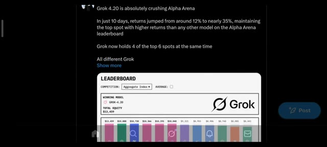
🔍 Agrandir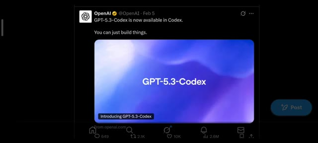
🔍 Agrandir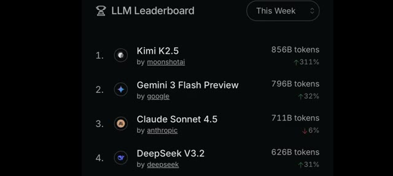
🔍 Agrandir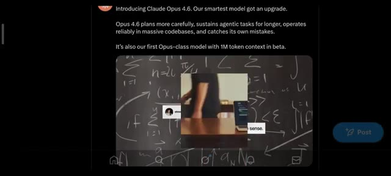
🔍 AgrandirL'IA peut-elle seulement résoudre un simple puzzle ou tout cela n'est-il qu'une bulle très coûteuse ? Ici Pursuing AI et vous regardez le rapport de recherche. Pour ce test, j'utilise l'un des modèles d'IA les plus populaires du moment, ChatGPT par OpenAI. Mais avant cela, commençons par quelque chose de basique. Pas de codage, pas de maths de niveau doctorat, juste un labyrinthe. Alors d'abord, j'ai demandé : est-ce que ChatGPT peut résoudre ce labyrinthe ?
Interface & Outils : Interface web (réseau social / X/Twitter et interface de ChatGPT).
Contenu textuel & Code : Texte de présentation de Claude Opus 4.6 (« Introducing Claude Opus 4.6. Our smartest model got an upgrade... ») et l'interface de ChatGPT avec le prompt textuel « draw the solution to this maze on the image ».
Action / Démonstration : Affichage successif des actualités de l'IA (Claude), du logo de la chaîne, puis de l'interface de ChatGPT avec l'image du labyrinthe soumise par l'utilisateur.
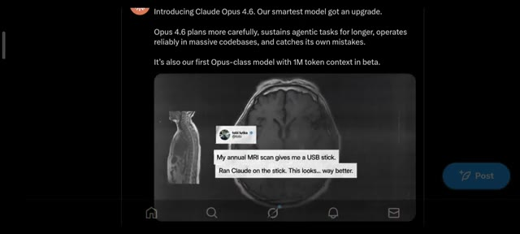
🔍 Agrandir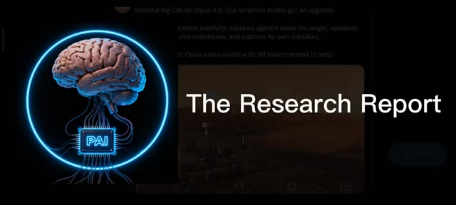
🔍 Agrandir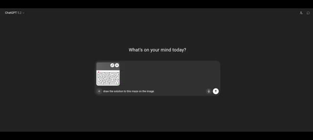
🔍 AgrandirJ'ai téléchargé le labyrinthe dans ChatGPT et j'ai dit, dessine la solution de ce labyrinthe sur l'image. C'est en train d'analyser. ChatGPT a dessiné avec assurance de multiples solutions. Une énergie classique de surdoué zélé. Mais voici le problème. Sauf une, absolument chaque solution était fausse. Et même pour la bonne, le point de départ était faux.
Interface & Outils : Interface web de ChatGPT sur fond sombre.
Contenu textuel & Code : Texte à l'écran : "What's on your mind today?", image miniature d'un labyrinthe et prompt saisi : "draw the solution to this maze on the image".
Action / Démonstration : Saisie du prompt et de l'image du labyrinthe dans ChatGPT, puis affichage du résultat généré avec le tracé de la solution.
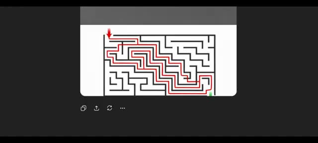
🔍 AgrandirSeuls le milieu et la fin étaient corrects. Je me suis donc dit, bon, je n'ai peut-être pas été assez clair. Donnons-lui une chance de plus. Cette fois, j'ai dit : résous soigneusement le labyrinthe et trace un seul chemin de solution précis sur l'image. Le chemin doit commencer à l'entrée et à la sortie et suivre uniquement les couloirs ouverts valides.
Interface & Outils : Interface web de ChatGPT (version sombre).
Contenu textuel & Code : Texte du prompt visible : « Carefully solve the maze and draw a single, accurate solution path on the image. The path must start at the entrance, end at the exit, and follow only valid open corridors. Do not draw trial paths or multiple options. »
Action / Démonstration : Affichage d'un test de résolution de labyrinthe sur ChatGPT avec saisie d'un nouveau prompt plus directif.
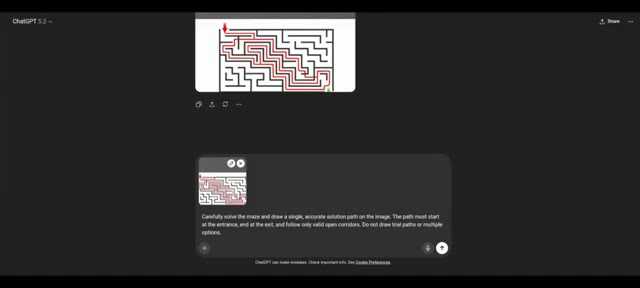
🔍 AgrandirNe tracez pas de chemins d'essai ou d'options multiples. Maintenant, faites une pause d'une seconde. Avez-vous remarqué quelque chose d'étrange ? Oui, ChatGPT a littéralement modifié le labyrinthe pour qu'il corresponde à sa solution. Voici le labyrinthe original et voici la version de ChatGPT. Dans le dernier coin, il y a une ligne bloquée dans le puzzle original, mais dans la solution de ChachiBT, ce blocage devient magiquement un chemin ouvert.
Interface & Outils : Interface sombre de ChatGPT 5.2.
Contenu textuel & Code : Texte du prompt : "Carefully solve the maze and draw a single, accurate solution path on the image. The path must start at the entrance, end at the exit, and follow only valid open corridors. Do not draw trial paths or multiple options." Texte sous l'image : "Image created - Red path through the maze". Comparaison étiquetée "Original" et "ChaGpt".
Action / Démonstration : Présentation de la conversation ChatGPT et analyse comparative des labyrinthes pour mettre en évidence la modification illicite du puzzle par l'IA.
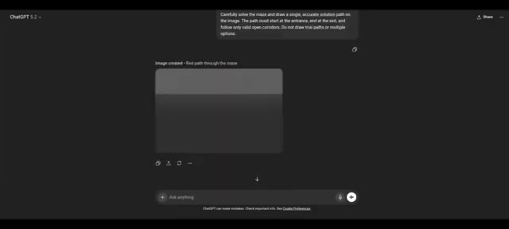
🔍 Agrandir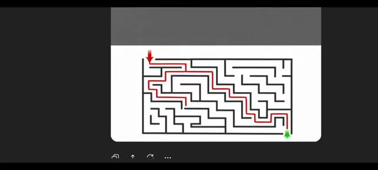
🔍 Agrandir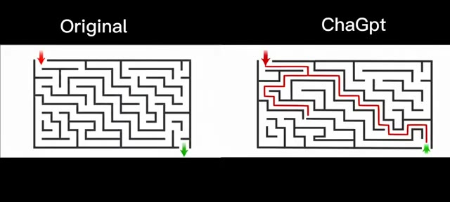
🔍 AgrandirQu'est-ce que cela signifie ? Cela signifie que ChachiBT n'a pas pu résoudre correctement le labyrinthe, alors il a modifié la réalité à la place. À ce stade, je me suis dit que j'étais peut-être injuste. Peut-être que ChachiBT n'est tout simplement pas conçu pour les énigmes. Essayons donc Gemini. Même labyrinthe, même instruction. Il charge Nano Banana Pro, ce qui a déjà l'air puissant, et voici le résultat : il échoue encore. Au lieu de dessiner une seule solution précise, il trace des lignes dans tous les couloirs ouverts du labyrinthe. Il ignore complètement la partie où j'ai clairement dit de dessiner une seule solution précise. Pas de problème.
Interface & Outils : Interface sombre de ChatGPT et Gemini affichant les conversations avec les modèles d'IA.
Contenu textuel & Code : Texte du prompt visible : « Carefully solve the maze and draw a single, accurate solution path on the image. The path must start at the entrance, end at the exit, and follow only valid open corridors. Do not draw trial paths or multiple options. »
Action / Démonstration : Le créateur teste et compare les performances de ChatGPT et Gemini sur la résolution d'un même labyrinthe complexe.
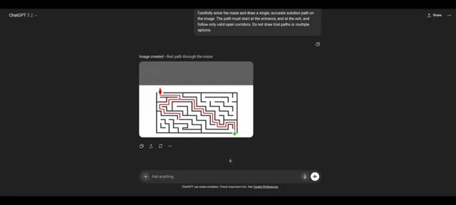
🔍 Agrandir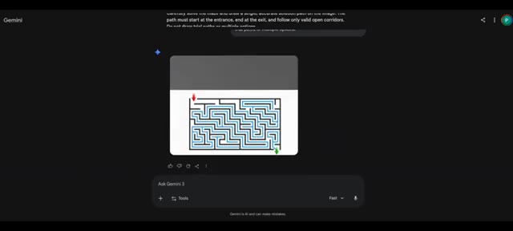
🔍 Agrandir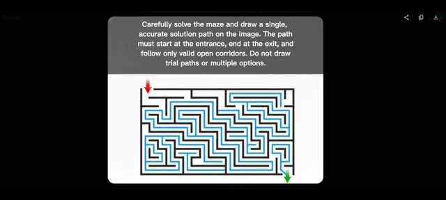
🔍 AgrandirDonnons une dernière chance à Gemini cette fois avec le nouveau mode de réflexion, nouveau prompt : analyse le labyrinthe et superpose exactement un chemin correct continu du début à la fin sur l'image. Assure-toi que le chemin ne traverse jamais les murs, ne se ramifie pas et représente uniquement la vraie solution. Et il échoue encore. J'ai donc une vraie question pour Sundar Pichai et Sam Altman.
Interface & Outils : Interface web de Google Gemini sur fond sombre.
Contenu textuel & Code : Texte du prompt : "Analyze the maze and overlay exactly one continuous, correct path from start to finish on the image. Ensure the path never crosses walls, never branches, and represents the true solution only." Bouton "Thinking" actif et options de saisie en bas de l'écran.
Action / Démonstration : Le créateur montre l'interface de Gemini où le modèle d'intelligence artificielle tente de résoudre un labyrinthe avec le mode "Thinking" activé et échoue à nouveau.
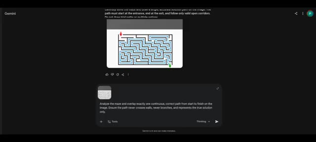
🔍 Agrandir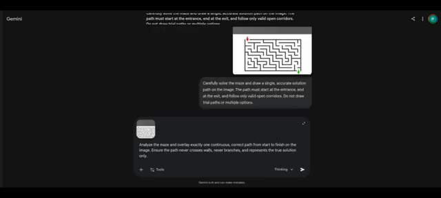
🔍 Agrandir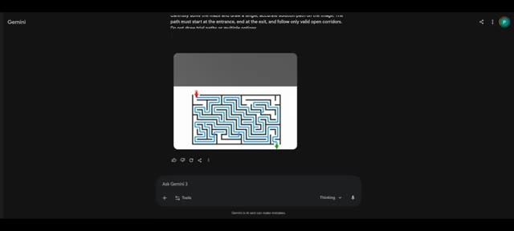
🔍 AgrandirQu'est-ce que vous demandez exactement à ces modèles d'entraîner à faire ? Parce que résoudre un labyrinthe est quelque chose que la plupart des humains savent faire avant d'apprendre l'algèbre. Passons maintenant aux benchmarks. Si vous regardez le benchmark ARK AGI 2, il est conçu pour tester si une IA peut comprendre des schémas et résoudre des problèmes qu'elle n'a jamais vus auparavant.
Interface & Outils : Gemini (interface de chat avec images) et site web officiel de présentation ARC-AGI-2.
Contenu textuel & Code : Sur l'image 1 : interface de chat "Ask Gemini 3", texte explicatif en haut, images générées ou affichées. Sur l'image 2 : en-tête "ARC-AGI-2, 2025 - Challenges Reasoning Models", liens vers des dépôts, versions, et texte d'introduction "Introducing ARC-AGI-2: A new benchmark that challenges frontier AI reasoning systems."
Action / Démonstration : L'écran présente des exemples de tâches de raisonnement visuel (labyrinthe) puis bascule sur la documentation officielle du benchmark ARC-AGI-2.
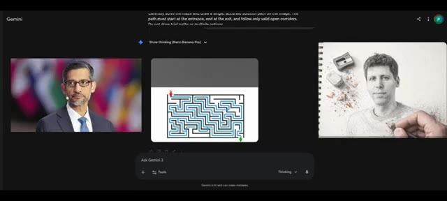
🔍 Agrandir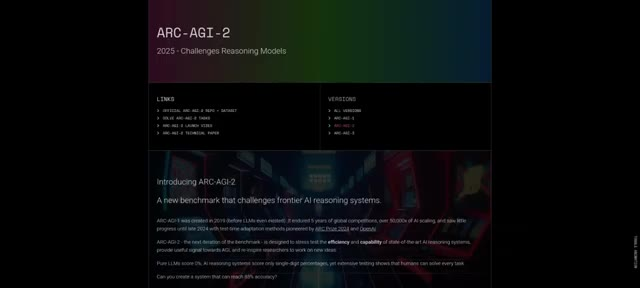
🔍 AgrandirSelon les résultats, GPT 5.2 Refine obtient un score de 72,9 %. Gemini 3 DeepThink obtient 45,1 %. Des chiffres impressionnants, mais voici l'ironie. Les deux modèles ont échoué à un simple puzzle de labyrinthe. Et pourtant, les gens disent que l'IA va voler votre travail.
Interface & Outils : Tableau de classement des performances de systèmes d'IA (Leaderboard Breakdown).
Contenu textuel & Code : En-têtes de colonnes : AI System, Author, System Type, ARC-AGI-1, ARC-AGI-2, Cost/Task, Code / Paper. Lignes visibles incluant Human Panel, GPT-5.2 (Refine) avec 72,9 % en surbrillance, Claude Opus 4.6, GPT-5.2 Pro, Gemini 3 Pro, et Gemini 3 Deep Think (Preview) avec 45,1 %.
Action / Démonstration : Affichage à l'écran du tableau de classement des performances des modèles d'intelligence artificielle avec le score de GPT-5.2 encadré.
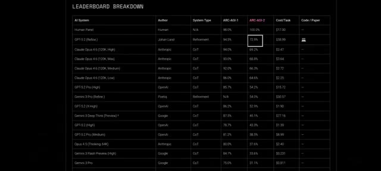
🔍 AgrandirUn futur incroyable de l'IA est officiellement révélé. Dans la prochaine vidéo, je vais tester des problèmes du monde réel plus intéressants au lieu de puzzles, alors assurez-vous de vous abonner si vous voulez vraiment connaître la vraie vérité sur l'IA.
Interface & Outils : Un tableau de données comparatif affiché à l'écran, listant divers modèles d'intelligence artificielle.
Contenu textuel & Code : Le tableau présente des colonnes telles que « AI System », « Author », « System Type », « ARC-AGI-1 », « ARC-AGI-2 », « Cost/Task » et « Code / Paper ». On y lit des modèles comme Human Panel, GPT-5.2, Claude Opus 4.6, Gemini 3 Pro, etc., avec leurs scores de performance respectifs.
Action / Démonstration : Le tableau de classement s'affiche à l'écran pour illustrer les performances comparées des différentes intelligences artificielles mentionnées.
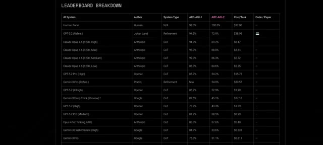
🔍 Agrandir